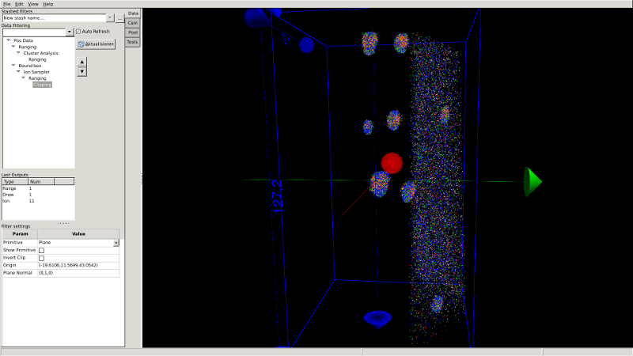
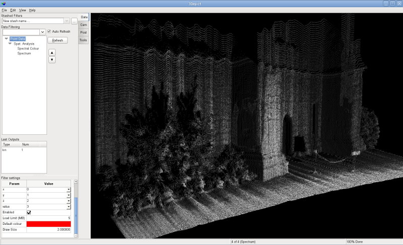
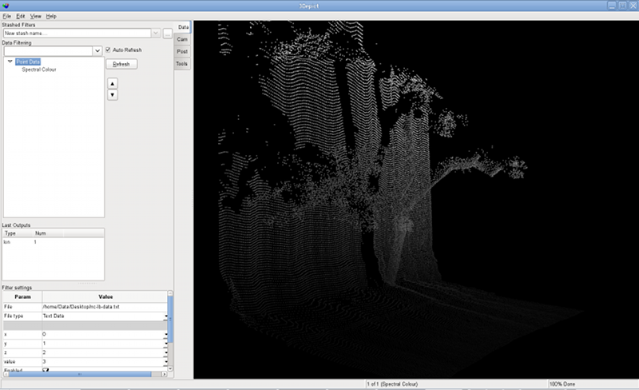
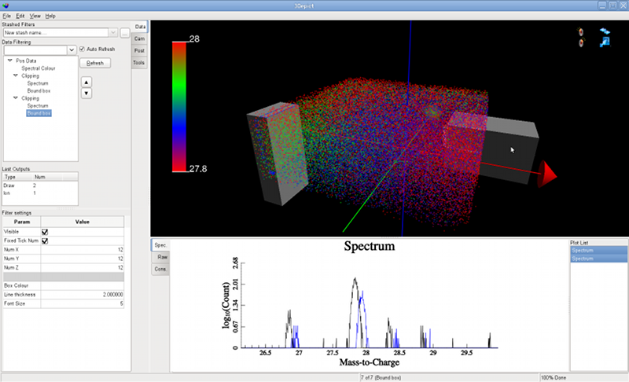

3Depict - Valued point cloud visualisation and analysis
Home
Download
Questions
Documentation
Contact
About
Have a neat image?
You should
let us know
, so we can add it!
Cluster analysis of Cu Precipitates in Steel

Courtesy, Dr. P. Styman,
University of Oxford, Dept. Materials
"Ladybug" robotics project data visualisation


Atom probe data analysis
